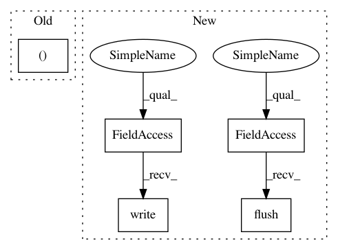

71d61f102189f8b7337567ca34ad590f2ddf4808,snntoolbox/simulation/target_simulators/INI_ttfs_target_sim.py,SNN,simulate,#SNN#,34
Before Change
for l in range(self.num_classes):
spike = 0
for t in range(self._num_timesteps):
if output_b_l_t[b, l, t]:
spike = True
output_b_l_t[b, l, t] = spike
After Change
if sim_step % 1 == 0:
echo("{:.2%}_".format(current_acc))
else:
sys.stdout.write("\r{:>7.2%}".format(current_acc))
sys.stdout.flush()
if self.config.getboolean("conversion", "softmax_to_relu") and \
all(np.count_nonzero(output_b_l_t, (1, 2)) >= self.top_k):
print("Finished early.")
In pattern: SUPERPATTERN
Frequency: 3
Non-data size: 5
Instances
Project Name: NeuromorphicProcessorProject/snn_toolbox
Commit Name: 71d61f102189f8b7337567ca34ad590f2ddf4808
Time: 2018-02-27
Author: bodo.rueckauer@gmail.com
File Name: snntoolbox/simulation/target_simulators/INI_ttfs_target_sim.py
Class Name: SNN
Method Name: simulate
Project Name: QUANTAXIS/QUANTAXIS
Commit Name: af3878b1688c6fb69ec0d9ab817998783536da4b
Time: 2018-05-15
Author: wang_xiao_zhen@hotmail.com
File Name: QUANTAXIS_Test/QAFetch_Test/QATdx_Test.py
Class Name: Test_QA_Fetch
Method Name: extraDataFromDAD
Project Name: NeuromorphicProcessorProject/snn_toolbox
Commit Name: 71d61f102189f8b7337567ca34ad590f2ddf4808
Time: 2018-02-27
Author: bodo.rueckauer@gmail.com
File Name: snntoolbox/simulation/target_simulators/INI_ttfs_target_sim.py
Class Name: SNN
Method Name: simulate
Project Name: tensorflow/tensorboard
Commit Name: 9cbca7e891d6f4b185beedf36e3b4ad6dbb836be
Time: 2018-09-06
Author: nfelt@users.noreply.github.com
File Name: tensorboard/program.py
Class Name: TensorBoard
Method Name: main